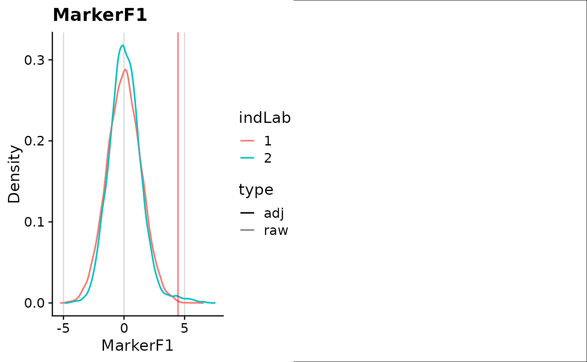

Plot expression densities with saved gates from gateStim(). With two
markers, also draw hexbin plots (requires the hexbin package).
Usage
plotStim(
ind,
.data,
pathProject,
marker = NULL,
chnl = NULL,
pop = NULL,
indLab = NULL,
axisLab = NULL,
excMin = TRUE,
limitsExpand = NULL,
limitsEqual = FALSE,
grid = TRUE,
gridNCol = 2,
showGate = TRUE,
minCell = 10,
bias = FALSE,
combnExc = NULL,
chnlGate = NULL,
markerGate = NULL,
gateTypeCytPos = "cyt",
mult = FALSE
)Arguments
- ind
numeric vector Sample indices to plot.
- .data
GatingSet, flowSet, cytoset, flowFrame, cytoframe, character, list or data.frame Data passed to
gateStim(), in the same sample order.- pathProject
character Project directory from
gateStim().- marker
character vector or NULL One or two marker labels to plot; supply either
markerorchnl. Default: NULL.- chnl
character vector or NULL One or two channels to plot. Default: NULL.
- pop
character or NULL Gated population; NULL selects the single saved population and errors if several exist. Default: NULL.
- indLab
character vector or NULL Sample labels, named by index or in
indorder. Default: NULL (sample indices).- axisLab
character vector or NULL Axis labels, named by marker/channel or in their order. Default: NULL (marker/channel names).
- excMin
logical Exclude minimum expression values and show densities scaled by the fraction of cells kept, alongside the unscaled densities. Default: TRUE.
- limitsExpand
list or NULL Axis limits to expand to, e.g.
list(x = c(0, 5), y = c(0, 5)). Default: NULL.- limitsEqual
logical Give bivariate axes equal ranges. Default: FALSE.
- grid
logical Arrange plots in a grid. Default: TRUE.
- gridNCol
integer Grid columns. Default: 2.
- showGate
logical Draw gate lines. Default: TRUE.
- minCell
numeric Minimum number of cells needed to plot a sample. Default: 10.
- bias
logical Add the saved
biasUnsshift to controls. Default: FALSE.- combnExc
list or NULL Channel combinations to exclude: each vector specifies positive channels, with other gating channels negative. Applies only when gating channels are supplied. Default: NULL.
- chnlGate
character or NULL Channels used to select positive cells; include these in the requested expression columns. Default: NULL.
- markerGate
character or NULL Marker labels used to select positive cells; cannot be combined with
chnlGate. Default: NULL.- gateTypeCytPos
character Positivity rule: "base" uses the main gate; "cyt" also admits cells above a refined gate when another marker clears its main gate. Default: "cyt".
- mult
logical Require positivity for at least two gating markers. Applies only when
chnlGateormarkerGateis supplied. Default: FALSE.
Value
A ggplot grid if grid = TRUE; otherwise a list of bivariate plots
by sample and univariate plots by marker. NULL if no sample meets minCell.
Examples
exampleData <- getExampleData()
#> Done
#> To reload it, use 'load_gs' function
gs <- flowWorkspace::load_gs(exampleData$pathGs)
pathProject <- gateStim(
tempfile("stimgate_"), gs, exampleData$batchList,
marker = exampleData$marker
)
#> shared bandwidth for MarkerF1: 0.329
#> shared bandwidth for MarkerF2: 0.334
#> getting base gates
#> chnl: BC1(La139)Dd
#> getting pre-adjustment gates
#> batch 2 of 2
#> getting clustered and/or controlled gates
#> chnl: BC2(Pr141)Dd
#> getting pre-adjustment gates
#> batch 2 of 2
#> getting clustered and/or controlled gates
#> getting cyt combn frequencies
#> batch 2 of 2
plotStim(exampleData$batchList[[1]], gs, pathProject,
marker = exampleData$marker[1]
)
